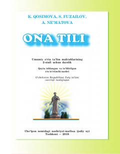

OT2-sinf o'quvchilari uchun ona tili fanidan darslik.
Ushbu darslik umumiy o'rta ta'lim maktablarining 2-sinf o'quvchilari uchun mo'ljallangan bo'lib, ona tili fanidan boshlang'ich bilim va ko'nikmalarni shakllantirishga xizmat qiladi. Kitobda nutq, og'zaki va yozma nutq, gap va so'z kabi mavzular amaliy mashqlar orqali tushuntirilgan.